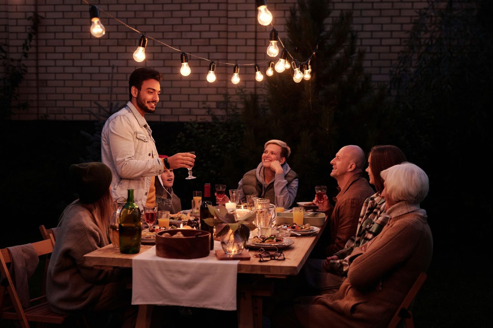
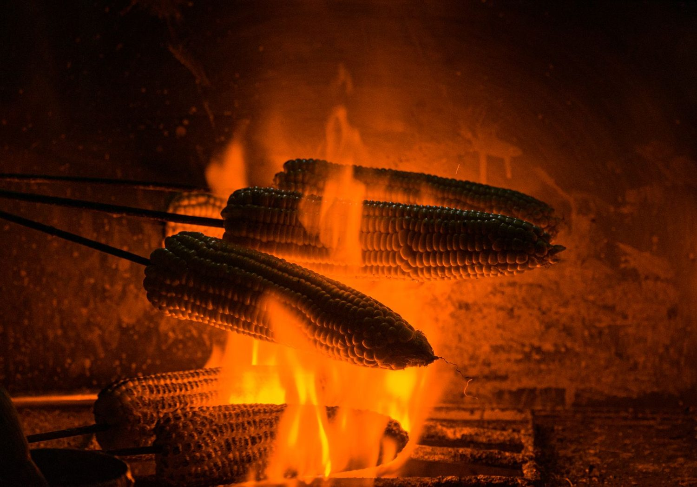
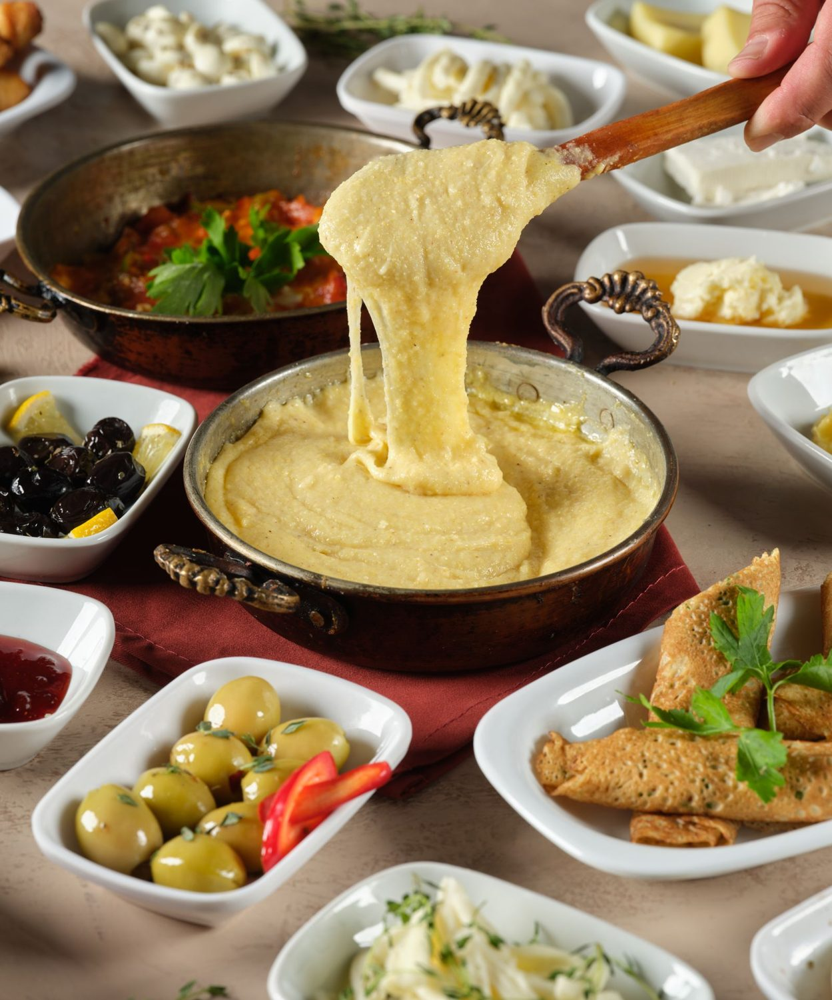

Four feasts, told the way they happened: what was asked, what I cooked, and what came of it. Guests fed, ears cooked and courses served are counted, not estimated.
The table goes where the crop was. Photo: Pexels 4622288.
The Ask
Dale Pritchard's crew and neighbours had brought in forty acres of sweet corn in nine days. He wanted a supper for all 120 of them, served in the field the corn came out of that same week — not in the barn, not in a hall.
The Cooking
Two forty-foot tables went up between the standing rows. The fire was lit at two o'clock; by five the coals were right. Corn on the cob grilled in the husk, creamed corn and succotash from the same picking, polenta stirred in the copper pot for the full forty-five minutes, cornbread in six skillets, and sweet-corn ice cream to finish — a custard, churned that morning, that tastes the way the field smells in August.
The Outcome
All 120 fed before the light went, 340 ears cooked, and not one course late. Dale booked the same Saturday for 2026 before the ice cream came out. The tables now live in his barn between harvests, which is where good tables should live.
“She set the table in the field the corn grew in and fed 120 of us before the light went. People here still talk about the polenta.”
Dale Pritchard — Kestrel Ridge Farm, the host
The Town Table
Where: Decorah, Iowa — the fairground hall and yardWhen: Thanksgiving Day, 27 November 2025Guests: 300, in two sittingsPrice of a seat: NothingCourses: 6Fires: 3

Two sittings, one table, nobody asked who paid. Photo: Pexels 5638815.
The Ask
The food pantry and the county fair board wanted one Thanksgiving table the whole town could sit at — no tickets, no sign-up sheet, no questions at the door. My part was the corn: six courses' worth, for 300 people, out of what the county's farms could give.
The Cooking
Eleven farms donated forty bushels of dent corn between them. For two days we nixtamalised, milled and soaked: hominy and beans in three great pots, polenta, skillet cornbread by the dozen, creamed corn from the September freezer store. The turkeys — two farms' birds — were ably handled by cooks who are welcome to the glory; my fire was for corn.
The Outcome
Three hundred seats filled across two sittings. Sixty pounds of hominy went back to the pantry freezer for January. The fair board has voted the table permanent, and the farms have already promised the corn.
“Nobody asked who paid. That was the whole point, and June guarded it like it was a course of its own.”
Pastor Ruth Ann Miller — who said grace at both sittings
A Wedding in the Corn
Where: A family cornfield near Calmar, IowaWhen: 15 August 2026Guests: 86Courses: 6 — corn in every oneEars cooked: 210Fires: 1

Cob over coals, husk on, at the wedding field. Photo: Pexels 8968066.
The Ask
Carla Jimenez married her partner in her grandfather's cornfield and wanted corn in every course — including an honest attempt at her grandmother's creamed corn, from the recipe card in her grandmother's hand, exactly as written.
The Cooking
The field's own Bodacious sweet corn carried the menu: grilled cob to start, creamed corn two ways — the grandmother's recipe cooked precisely as written, and mine beside it, so the family could judge. Then polenta under the mains, cornbread, and sweet-corn ice cream with popcorn brittle for dessert. The family voted at the table. The grandmother's won. Correctly.
The Outcome
Eighty-six guests, six courses, one thunderstorm watched from the barn doorway with cornbread in hand — counted as part of the entertainment. The recipe card, copied in my hand, is framed in the couple's kitchen next to the original.
“She cooked my grandmother's creamed corn exactly as written, and stood there smiling while hers lost to it. That's a cook.”
Carla Jimenez — the bride
The February Store Supper
Where: My barn kitchen, DecorahWhen: 21 February 2026Guests: 48Fresh ears: 0Courses: 4, all from the storeFires: 1 (the woodstove)

February, eating from the store: hominy first. Photo: Pexels 15793780.
The Ask
The Driftless Slow Table society set me a challenge in print: prove that February, fed entirely from the preserved crop, can eat as well as September. No fresh corn allowed. Nothing flown in. The store cupboard and the freezer only.
The Cooking
Hominy from Bloody Butcher dent corn, nixtamalised that week. Polenta from Glass Gem flint, milled coarse. Creamed corn frozen at the September peak, when the kernels were at their sweetest. Cornbread, and a dried-corn pudding to finish — an old receipt, soaked overnight, baked slow.
The Outcome
Forty-eight seats sold out in a day, and the society conceded in its own newsletter. The Store Supper now runs every February, and the waiting list opens at Thanksgiving — which is as it should be: winter's table is planned at autumn's.
“I stopped apologising for winter at the hominy course.”
Bea Kowalski — a guest at the first Store Supper
Your field could be next in the ledger.
Field dinners from $64 a head, festival days $1,380 flat, Thanksgiving week $2,900 the table. The reckoning is printed on the home page — no sums are done in private.